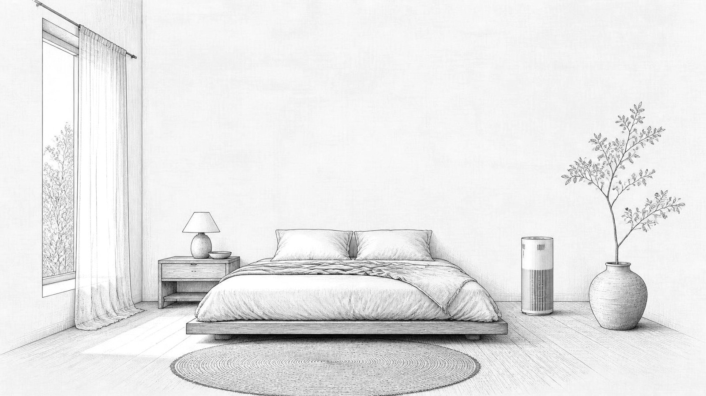

Water
Filtration at the tap and under the sink, and what it’s independently certified to reduce.
The Home Health Standard
We verify the products and materials in your home against independent certifications, not marketing claims.
In-person or virtual
In-person starts at $250 · San Diego
In-person in San Diego and Southern California. Virtual assessments are available for any home, anywhere in the world.
About Trace
Trace is a home health platform setting the standard for what’s actually in the spaces where people live, sleep, breathe and travel.
Most “clean” claims are self-reported: a brand’s own list, not independent verification. Meanwhile the products we use every day, from the mattress to the cookware to the cleaner under the sink, are rarely required to disclose what’s in them.
We check each room, identify what’s worth swapping and why, and back it with independent certifications. You get a score you can track and improve, the same way you track everything else about your health.
GOTS · EWG · NSF
Room by room
You spend a third of your life in the bedroom. Here’s what Trace looks at there.

1 2 3 4 5Materials and independent certifications.
Organic and certified, or conventional.
What the purifier is independently tested for.
Candles, sprays and diffusers.
Coverings and evening light.
How it works
We go room by room and record the products and materials you actually use: what’s in the cabinet, on the bed, on the stove.
60–90 minutes
Your Trace Score, plus a swap plan that names what’s worth changing, why, and where to buy a verified alternative.
Within a week
Start with the highest-impact swaps or do it all at once. Your timeline sets the order, and white-glove help is available.
Your schedule
What we look at
Filtration at the tap and under the sink, and what it’s independently certified to reduce.
Ingredient disclosure and independent certification, not “natural” on the front label.
Detergents, dryer products, candles, diffusers and sprays, and where fragrance is hiding.
Mattress, pillow and sheet materials, checked against certifications like GOTS, bed by bed.
Pan coatings, storage and everyday kitchenware.
Air purification and what the unit is independently tested for.
Everyday products can contain substances that researchers study for their effects on health. We look for the products most likely to contain them and point you to certified alternatives.
VOCs are compounds that evaporate from paints, furniture, cleaners and candles into the air you breathe. Fragrance can hide undisclosed ingredients, including phthalates.
PFAS are “forever chemicals” used in non-stick coatings. BPA is common in plastics and can linings. Phthalates soften plastics and carry fragrance.
Chlorine and chloramine, lead from older plumbing, and other contaminants that vary by home. Filters are only as good as what they’re independently certified to reduce.
Sheets, mattresses and clothing are worn or slept on for hours. Synthetic materials and some preservatives, like parabens, are worth knowing about.
This is a sample, not the full list. Trace identifies the products and materials in your home that are likely sources and checks them against independent certifications. We do not test your air, water or surfaces, and we do not test for mold. Not medical advice.
Where Trace is going
Trace works wherever you are: in person in San Diego, virtually for any home in the world, and soon for the places you travel.
Available now
A room-by-room assessment with a written plan, in person in San Diego or by video from anywhere.
In development
The same assessment from your phone, built for any home anywhere in the world. You get an instant provisional score, and Trace confirms it after reviewing your photos and receipts.
In development
Independent verification for short-term rentals, hotels and other places people stay, so travelers can see what’s in the space.
Questions
No. We verify the products and materials in your home against independent certifications. We don’t run lab tests on your air, water or surfaces.
No. The plan ranks swaps by impact and you decide the pace. Many people start with the bedroom and kitchen.
Yes. Most swaps are products, not renovations.
In-person assessments in San Diego and Southern California. Virtual assessments are available for any home, anywhere in the world.
Follow along
Room-by-room swaps, assessment footage, and the research behind every recommendation, on Instagram @tracehomeco.